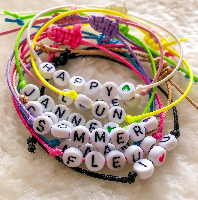

Eigen Armbandjes Maken

Informatie
Eigen armbandjes maken is een creatieve activiteit waarbij je kleurrijke kralen en elastisch draad gebruikt om een armband te ontwerpen.Deze activiteit is geschikt voor kinderen vanaf 5 jaar en kan alleen of samen met vrienden worden gedaan.
Het is een eenvoudige knutsel die niet veel tijd kost en kan variëren van 15 minuten tot een uur,
afhankelijk van hoe gedetailleerd je het armbandje maakt.
De kinderen kunnen hun armbandje personaliseren door kleuren of patronen te kiezen die ze leuk vinden,
en ze kunnen zelfs hun naam of speciale woorden in de armband verwerken met behulp van letterkralen.
Deze activiteit bevordert de fijne motoriek en stimuleert de creativiteit.
Het is ook een leuk manier om een persoonlijk cadeau te maken voor vrienden of familie.
Armbandjes maken is een budgetvriendelijke activiteit, aangezien de materialen vaak al beschikbaar zijn in knutselpakketten die rond de €5 tot €10 kosten.
Het is een perfect knutselproject voor een feestje, een regenachtige dag, of gewoon om tijd door te brengen met vrienden en familie.
Hoe maak je er een?
Benodigdheden:
Kralen (kleur naar keuze, bijvoorbeeld kleine gekleurde kraaltjes)Elastisch draad (zoals elastisch koord of elastisch draad voor armbanden)
Schaar
een sluiting of kraaltjes om de uiteinden te verbergen
Stappen:
Meet het elastische draad om het pols van het kind of degene voor wie het armbandje bedoeld is.Voeg ongeveer 5 cm extra toe, zodat je genoeg draad hebt om het armbandje af te maken.
Kies je kralen
Laat de kinderen een patroon kiezen van de kralen.Ze kunnen een bepaald kleurenschema volgen of een willekeurig patroon maken met verschillende kleuren.
Je kunt ook letters gebruiken om namen of woorden in het armbandje te verwerken.
Kralen neer zetten
Begin de kralen één voor één op het elastische draad te zetten.Zorg ervoor dat de kraaltjes gelijkmatig verdeeld zijn, zodat het patroon mooi uitkomt.
Test de maat
Als het armbandje genoeg kralen heeft, meet dan nogmaals of het goed past om de pols.Als het te kort is, voeg dan nog enkele kralen toe.
Knopen of vastmaken
Wanneer het armbandje de juiste lengte heeft, maak je een stevige knoop aan het uiteinde van het elastische draad.Zorg ervoor dat de knoop goed vastzit. Je kunt ook een extra knoop maken voor extra zekerheid.
Sluiting toevoegen
Als je een sluiting wilt toevoegen, kun je een kleine kraal aan het uiteinde van de draad doen om het netjes af te werken.Als je geen sluiting hebt, kun je ook de uiteinden in de laatste kraal stoppen en knopen om de draad te verbergen.